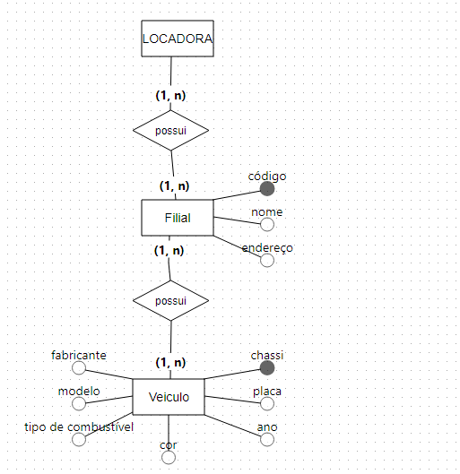
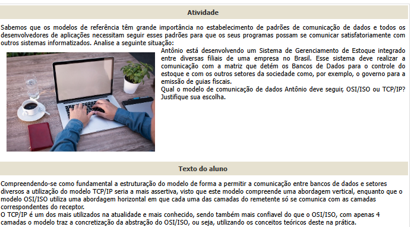

Analista de Sistemas
Com a analise de sistemas posso verificar dados dos projetos para integrá-los de maneira funcional implementando também banco de dados criando programas personalizados para o usuário final.
Acredito que minha maior dificuldade nessa função foi entender sobre a estrutura de banco de dados e implementação desta no código base.
Aqui estarei apresentando alguns dos projetos que fiz em Analise de Sistemas:


Web Developer
Mobile Developer
Writer
Systems Analyst